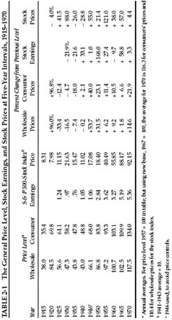
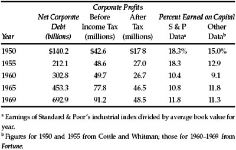

I nflation, and the fight against it, has been very much in the public’s mind in recent years. The shrinkage in the purchasing power of the dollar in the past, and particularly the fear (or hope by speculators) of a serious further decline in the future, has greatly influenced the thinking of Wall Street. It is clear that those with a fixed dollar income will suffer when the cost of living advances, and the same applies to a fixed amount of dollar principal. Holders of stocks, on the other hand, have the possibility that a loss of the dollar’s purchasing power may be offset by advances in their dividends and the prices of their shares.
On the basis of these undeniable facts many financial authorities have concluded that (1) bonds are an inherently undesirable form of investment, and (2) consequently, common stocks are by their very nature more desirable investments than bonds. We have heard of charitable institutions being advised that their portfolios should consist 100% of stocks and zero percent of bonds. * This is quite a reversal from the earlier days when trust investments were restricted by law to high-grade bonds (and a few choice preferred stocks).
Our readers must have enough intelligence to recognize that even high-quality stocks cannot be a better purchase than bonds under all conditions —i.e., regardless of how high the stock market may be and how low the current dividend return compared with the rates available on bonds. A statement of this kind would be as absurd as was the contrary one—too often heard years ago—that any bond is safer than any stock. In this chapter we shall try to apply various measurements to the inflation factor, in order to reach some conclusions as to the extent to which the investor may wisely be influenced by expectations regarding future rises in the price level.
In this matter, as in so many others in finance, we must base our views of future policy on a knowledge of past experience. Is inflation something new for this country, at least in the serious form it has taken since 1965? If we have seen comparable (or worse) inflations in living experience, what lessons can be learned from them in confronting the inflation of today? Let us start with Table 2-1, a condensed historical tabulation that contains much information about changes in the general price level and concomitant changes in the earnings and market value of common stocks. Our figures will begin with 1915, and thus cover 55 years, presented at five-year intervals. (We use 1946 instead of 1945 to avoid the last year of wartime price controls.)
The first thing we notice is that we have had inflation in the past—lots of it. The largest five-year dose was between 1915 and 1920, when the cost of living nearly doubled. This compares with the advance of 15% between 1965 and 1970. In between, we have had three periods of declining prices and then six of advances at varying rates, some rather small. On this showing, the investor should clearly allow for the probability of continuing or recurrent inflation to come.
Can we tell what the rate of inflation is likely to be? No clear answer is suggested by our table; it shows variations of all sorts. It would seem sensible, however, to take our cue from the rather consistent record of the past 20 years. The average annual rise in the consumer price level for this period has been 2.5%; that for 1965–1970 was 4.5%; that for 1970 alone was 5.4%. Official government policy has been strongly against large-scale inflation, and there are some reasons to believe that Federal policies will be more effective in the future than in recent years. * We think it would be reasonable for an investor at this point to base his thinking and decisions on a probable (far from certain) rate of future inflation of, say, 3% per annum. (This would compare with an annual rate of about 2½% for the entire period 1915–1970.) 1

What would be the implications of such an advance? It would eat up, in higher living costs, about one-half the income now obtainable on good medium-term tax-free bonds (or our assumed after-tax equivalent from high-grade corporate bonds). This would be a serious shrinkage, but it should not be exaggerated. It would not mean that the true value, or the purchasing power, of the investor’s fortune need be reduced over the years. If he spent half his interest income after taxes he would maintain this buying power intact, even against a 3% annual inflation.
But the next question, naturally, is, “Can the investor be reasonably sure of doing better by buying and holding other things than high-grade bonds, even at the unprecedented rate of return offered in 1970–1971?” Would not, for example, an all-stock program be preferable to a part-bond, part-stock program? Do not common stocks have a built-in protection against inflation, and are they not almost certain to give a better return over the years than will bonds? Have not in fact stocks treated the investor far better than have bonds over the 55-year period of our study?
The answer to these questions is somewhat complicated. Common stocks have indeed done better than bonds over a long period of time in the past. The rise of the DJIA from an average of 77 in 1915 to an average of 753 in 1970 works out at an annual compounded rate of just about 4%, to which we may add another 4% for average dividend return. (The corresponding figures for the S & P composite are about the same.) These combined figures of 8% per year are of course much better than the return enjoyed from bonds over the same 55-year period. But they do not exceed that now offered by high-grade bonds. This brings us to the next logical question: Is there a persuasive reason to believe that common stocks are likely to do much better in future years than they have in the last five and one-half decades?
Our answer to this crucial question must be a flat no. Common stocks may do better in the future than in the past, but they are far from certain to do so. We must deal here with two different time elements in investment results. The first covers what is likely to occur over the long-term future—say, the next 25 years. The second applies to what is likely to happen to the investor—both financially and psychologically—over short or intermediate periods, say five years or less. His frame of mind, his hopes and apprehensions, his satisfaction or discontent with what he has done, above all his decisions what to do next, are all determined not in the retrospect of a lifetime of investment but rather by his experience from year to year.
On this point we can be categorical. There is no close time connection between inflationary (or deflationary) conditions and the movement of common-stock earnings and prices. The obvious example is the recent period, 1966–1970. The rise in the cost of living was 22%, the largest in a five-year period since 1946–1950. But both stock earnings and stock prices as a whole have declined since 1965. There are similar contradictions in both directions in the record of previous five-year periods.
Inflation and Corporate Earnings
Another and highly important approach to the subject is by a study of the earnings rate on capital shown by American business. This has fluctuated, of course, with the general rate of economic activity, but it has shown no general tendency to advance with wholesale prices or the cost of living. Actually this rate has fallen rather markedly in the past twenty years in spite of the inflation of the period. (To some degree the decline was due to the charging of more liberal depreciation rates. See Table 2-2.) Our extended studies have led to the conclusion that the investor cannot count on much above the recent five-year rate earned on the DJIA group—about 10% on net tangible assets (book value) behind the shares. 2 Since the market value of these issues is well above their book value—say, 900 market vs. 560 book in mid-1971—the earnings on current market price work out only at some 6¼%. (This relationship is generally expressed in the reverse, or “times earnings,” manner—e.g., that the DJIA price of 900 equals 18 times the actual earnings for the 12 months ended June 1971.)
Our figures gear in directly with the suggestion in the previous chapter * that the investor may assume an average dividend return of about 3.5% on the market value of his stocks, plus an appreciation of, say, 4% annually resulting from reinvested profits. (Note that each dollar added to book value is here assumed to increase the market price by about $1.60.)
The reader will object that in the end our calculations make no allowance for an increase in common-stock earnings and values to result from our projected 3% annual inflation. Our justification is the absence of any sign that the inflation of a comparable amount in the past has had any direct effect on reported per-share earnings. The cold figures demonstrate that all the large gain in the earnings of the DJIA unit in the past 20 years was due to a proportionately large growth of invested capital coming from reinvested profits. If inflation had operated as a separate favorable factor, its effect would have been to increase the “value” of previously existing capital; this in turn should increase the rate of earnings on such old capital and therefore on the old and new capital combined. But nothing of the kind actually happened in the past 20 years, during which the wholesale price level has advanced nearly 40%. (Business earnings should be influenced more by wholesale prices than by “consumer prices.”) The only way that inflation can add to common stock values is by raising the rate of earnings on capital investment. On the basis of the past record this has not been the case.
In the economic cycles of the past, good business was accompanied by a rising price level and poor business by falling prices. It was generally felt that “a little inflation” was helpful to business profits. This view is not contradicted by the history of 1950–1970, which reveals a combination of generally continued prosperity and generally rising prices. But the figures indicate that the effect of all this on the earning power of common-stock capital (“equity capital”) has been quite limited; in fact it has not even served to maintain the rate of earnings on the investment. Clearly there have been important offsetting influences which have prevented any increase in the real profitability of American corporations as a whole. Perhaps the most important of these have been (1) a rise in wage rates exceeding the gains in productivity, and (2) the need for huge amounts of new capital, thus holding down the ratio of sales to capital employed.
Our figures in Table 2-2 indicate that so far from inflation having benefited our corporations and their shareholders, its effect has been quite the opposite. The most striking figures in our table are those for the growth of corporate debt between 1950 and 1969. It is surprising how little attention has been paid by economists and by Wall Street to this development. The debt of corporations has expanded nearly fivefold while their profits before taxes a little more than doubled. With the great rise in interest rates during this period, it is evident that the aggregate corporate debt is now an adverse economic factor of some magnitude and a real problem for many individual enterprises. (Note that in 1950 net earnings after interest but before income tax were about 30% of corporate debt, while in 1969 they were only 13.2% of debt. The 1970 ratio must have been even less satisfactory.) In sum it appears that a significant part of the 11% being earned on corporate equities as a whole is accomplished by the use of a large amount of new debt costing 4% or less after tax credit. If our corporations had maintained the debt ratio of 1950, their earnings rate on stock capital would have fallen still lower, in spite of the inflation.
TABLE 2-2 Corporate Debt, Profits, and Earnings on Capital, 1950–1969

The stock market has considered that the public-utility enterprises have been a chief victim of inflation, being caught between a great advance in the cost of borrowed money and the difficulty of raising the rates charged under the regulatory process. But this may be the place to remark that the very fact that the unit costs of electricity, gas, and telephone services have advanced so much less than the general price index puts these companies in a strong strategic position for the future. 3 They are entitled by law to charge rates sufficient for an adequate return on their invested capital, and this will probably protect their shareholders in the future as it has in the inflations of the past.
All of the above brings us back to our conclusion that the investor has no sound basis for expecting more than an average overall return of, say, 8% on a portfolio of DJIA-type common stocks purchased at the late 1971 price level. But even if these expectations should prove to be understated by a substantial amount, the case would not be made for an all-stock investment program. If there is one thing guaranteed for the future, it is that the earnings and average annual market value of a stock portfolio will not grow at the uniform rate of 4%, or any other figure. In the memorable words of the elder J. P. Morgan, “ They will fluctuate. ” * This means, first, that the common-stock buyer at today’s prices—or tomorrow’s—will be running a real risk of having unsatisfactory results therefrom over a period of years. It took 25 years for General Electric (and the DJIA itself) to recover the ground lost in the 1929–1932 debacle. Besides that, if the investor concentrates his portfolio on common stocks he is very likely to be led astray either by exhilarating advances or by distressing declines. This is particularly true if his reasoning is geared closely to expectations of further inflation. For then, if another bull market comes along, he will take the big rise not as a danger signal of an inevitable fall, not as a chance to cash in on his handsome profits, but rather as a vindication of the inflation hypothesis and as a reason to keep on buying common stocks no matter how high the market level nor how low the dividend return. That way lies sorrow.
Alternatives to Common Stocks as Inflation Hedges
The standard policy of people all over the world who mistrust their currency has been to buy and hold gold. This has been against the law for American citizens since 1935—luckily for them. In the past 35 years the price of gold in the open market has advanced from $35 per ounce to $48 in early 1972—a rise of only 35%. But during all this time the holder of gold has received no income return on his capital, and instead has incurred some annual expense for storage. Obviously, he would have done much better with his money at interest in a savings bank, in spite of the rise in the general price level.
The near-complete failure of gold to protect against a loss in the purchasing power of the dollar must cast grave doubt on the ability of the ordinary investor to protect himself against inflation by putting his money in “things.” * Quite a few categories of valuable objects have had striking advances in market value over the years—such as diamonds, paintings by masters, first editions of books, rare stamps and coins, etc. But in many, perhaps most, of these cases there seems to be an element of the artificial or the precarious or even the unreal about the quoted prices. Somehow it is hard to think of paying $67,500 for a U.S. silver dollar dated 1804 (but not even minted that year) as an “investment operation.” 4 We acknowledge we are out of our depth in this area. Very few of our readers will find the swimming safe and easy there.
The outright ownership of real estate has long been considered as a sound long-term investment, carrying with it a goodly amount of protection against inflation. Unfortunately, real-estate values are also subject to wide fluctuations; serious errors can be made in location, price paid, etc.; there are pitfalls in salesmen’s wiles. Finally, diversification is not practical for the investor of moderate means, except by various types of participations with others and with the special hazards that attach to new flotations—not too different from common-stock ownership. This too is not our field. All we should say to the investor is, “Be sure it’s yours before you go into it.”
Conclusion
Naturally, we return to the policy recommended in our previous chapter. Just because of the uncertainties of the future the investor cannot afford to put all his funds into one basket—neither in the bond basket, despite the unprecedentedly high returns that bonds have recently offered; nor in the stock basket, despite the prospect of continuing inflation.
The more the investor depends on his portfolio and the income therefrom, the more necessary it is for him to guard against the unexpected and the disconcerting in this part of his life. It is axiomatic that the conservative investor should seek to minimize his risks. We think strongly that the risks involved in buying, say, a telephone-company bond at yields of nearly 7½% are much less than those involved in buying the DJIA at 900 (or any stock list equivalent thereto). But the possibility of large-scale inflation remains, and the investor must carry some insurance against it. There is no certainty that a stock component will insure adequately against such inflation, but it should carry more protection than the bond component.
This is what we said on the subject in our 1965 edition (p. 97), and we would write the same today:
It must be evident to the reader that we have no enthusiasm for common stocks at these levels (892 for the DJIA). For reasons already given we feel that the defensive investor cannot afford to be without an appreciable proportion of common stocks in his portfolio, even if we regard them as the lesser of two evils—the greater being the risks in an all-bond holding.